.jpg){kind=link}


應用
偏光太陽眼鏡
以大致垂直的穿透軸，抑制路面與水面的水平偏振眩光。
原理與例子S012Cam
從電場方向到反射、散射、偏振片、藍天與 LCD，搭配圖解、動手實驗與 12 個應用。
光除了明暗和顏色，還有偏振這個資訊。跟著圖解做實驗，再用 S012Cam 把線偏振的方向與程度變成影像。
在自由空間中，光是橫向的電磁波。電場 E、磁場 B 與光的傳播方向彼此垂直。光學通常用電場 E 的振動方式描述偏振。「電場垂直振動」不表示光往上走。
比較 Fig. 1(a) 的行進波快照，以及 Fig. 1(b–d) 在固定位置的電場末端軌跡。
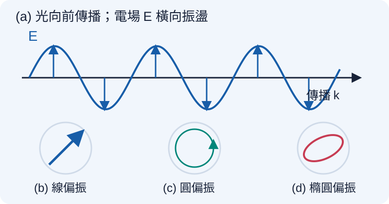
線偏振：E 沿固定軸往返振動。圓偏振：E 的末端以固定長度旋轉。橢圓偏振：E 的末端描出橢圓。兩個互相垂直的電場分量及其相位差，決定偏振狀態。線偏振是「軸」而不是單向箭頭，所以 0° 和 180° 等價。
亮度、波長與偏振，描述光的不同性質。波長決定光譜顏色，偏振描述電場。兩束同樣的紅光，可以分別是水平和垂直線偏振；同一束混色光中的紅、綠、藍成分，也可以有不同的偏振狀態。
Fig. 2(a–c) 示範三個波段可以具有各自的偏振軸。
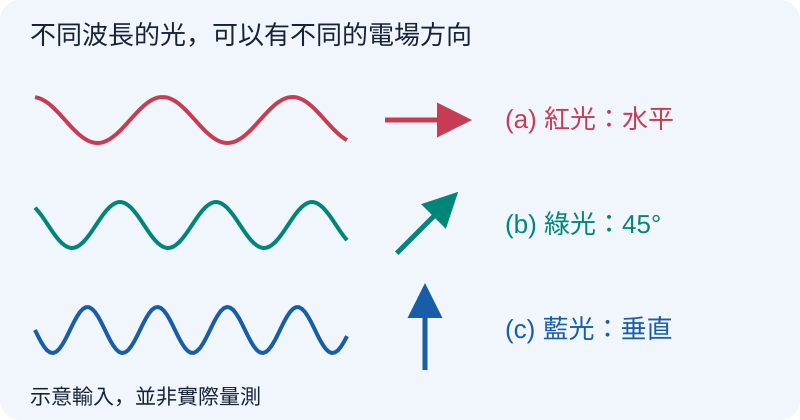
材料的反射、吸收和相位延遲可能隨波長改變，因此光穿過材料後，不同顏色的偏振也可能不同。S012Cam 可分開看 R、G、B 通道；這些是感光元件的寬波段，不是三個單一波長。
延伸閱讀：Edmund Optics: Introduction to Polarization · RP Photonics: Polarization of Light
非偏振光仍然有電場。它的橫向電場分量隨時間變動，對觀察時間取平均後，沒有偏好的偏振狀態。一般熱光源的光，在反射或散射之前，常可近似為非偏振光。這與圓偏振不同：圓偏振的電場旋轉具有確定的相位關係。
Fig. 3(a–c) 用不同時間的樣本，區分非偏振、部分偏振與線偏振光。
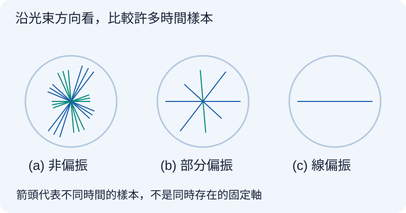
部分偏振光介於完全偏振與非偏振之間。DoLP 只描述線偏振部分。DoLP = 0 不能直接證明是非偏振光：純圓偏振通過旋轉的理想線性分析片時，亮度也不隨角度改變。S012Cam 的四角度方法不量測圓偏振的 Stokes 分量 S₃。
延伸閱讀：RP Photonics: Polarization of Light · Nikon MicroscopyU: Introduction to Polarized Light
光到達兩種介質的交界面時，Fresnel 方程式描述兩種電場方向各自的反射率。入射面是入射光線與表面法線所形成的平面。s 偏振的電場垂直入射面；p 偏振的電場平行入射面。兩者反射率不同，反射後比例改變，原本非偏振的光便可能變成部分偏振光。
Fig. 4 的法線與入射面，定義了 s 與 p 分量。
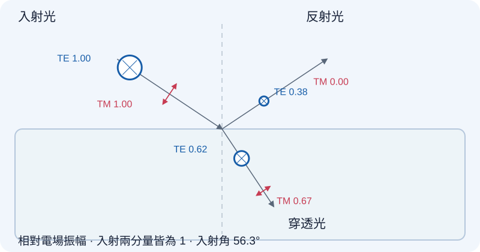
Fig. 5 的曲線顯示，理想 Brewster 角的 p 反射分量為零。
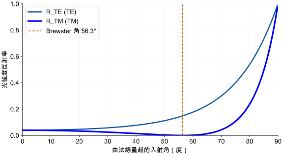
對透明、不吸收的介電質，Brewster 角滿足 tan θB = n₂/n₁。在這個角度 Rp = 0，所以非偏振入射光的反射光，理想上是完全 s 偏振。空氣到水約為 53°，到一般玻璃約為 56°，皆從法線量起。實際粗糙表面、鍍膜、背景光與多重反射，會降低偏振純度。
對水平桌面或水面，入射面為垂直面，因此較強的 s 反射光，其電場沿水平方向。穿透軸垂直的偏振片便能抑制這種眩光。對各向同性表面，正入射時 s、p 反射率相同。金屬具有吸收，不能直接套用上述介電質的 Brewster 角結論。
比較 Fig. 6(a) 的明亮反光與 Fig. 6(b) 轉動偏振片後減弱的反光。

改變角度時，先看入射與反射光線如何移動，再看右側的反射分量。在 Brewster 角，紅色 p 分量消失，藍色 s 分量仍存在，因此反射光呈 s 偏振。
側視光路：金色為入射光、藍色為反射光、綠色為穿透光。光線方向與電場方向是不同的量。
非偏振入射的理想介電質模型。長條表示各電場分量的反射率，不是整個場景的亮度。 · DoLP
直接用眼睛看。斜看水平玻璃桌或平靜水面上的明亮反光，把線性偏振片放在一隻眼睛前，保持視線方向不變，慢慢旋轉。觀察同一塊反光如何由亮變暗，再變亮。這個實驗要看的是：反射光偏好某個電場方向。不需要相機，也不必比較霧面背景。
延伸閱讀：UC Berkeley: Basic Properties of Light · RP Photonics: Brewster’s Angle
當光遇到遠小於波長的分子或粒子，電場會驅動它們形成振盪的電偶極。偶極在垂直其振盪軸的方向輻射較強，在振盪軸方向不輻射。從側面觀察，等於選出其中一種橫向電場分量，因此散射光具有偏振。
Fig. 7 穹頂球心的小人代表觀察者；每個天空方向的視線，都從這個位置出發。
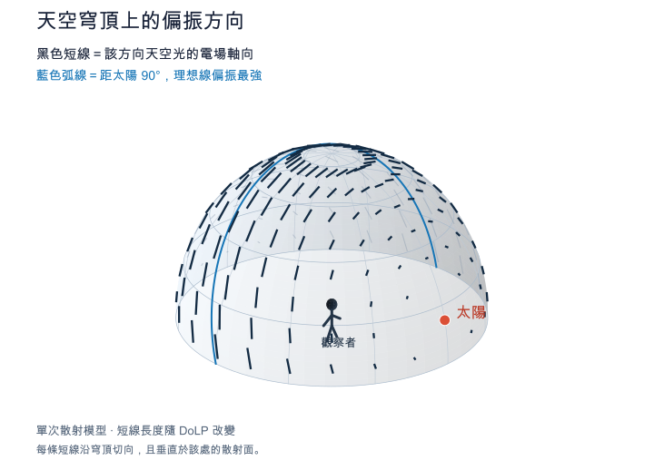
Fig. 8 的側向幾何顯示，90° 散射方向如何選出橫向電場。
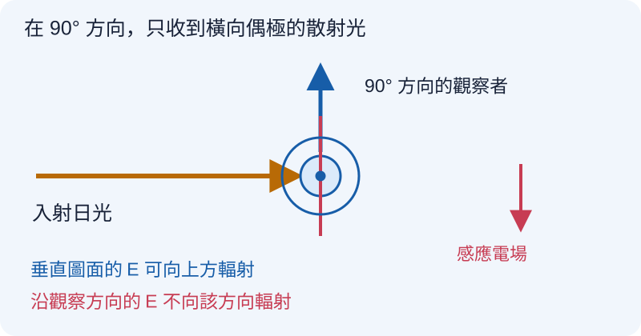
Fig. 9 的理想曲線在 90° 達到最大 DoLP。
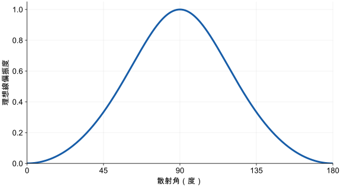
理想模型在散射角 90° 時偏振最強。在 Rayleigh 適用範圍內，散射強度大致與 1/λ⁴ 成正比，因此可見光中較短的波長散射更強。天空的藍色與偏振都與散射有關，但顏色和偏振仍是不同的觀察量。
Fig. 10 為 Edwin H. Land；他的研究促成實用片狀偏振片的發展。
1920 年代末，Edwin H. Land 致力於便宜、可製成大片的合成偏振片。早期方法不是培養一大塊晶體，而是將大量微小的二向色性晶體排列一致，固定在透明材料中。他在 1929 年提出相關申請，US1,918,848 專利於 1933 年獲准。
Polaroid 公司於 1937 年成立。片狀偏振片先用於減少眩光的眼鏡、攝影濾片與立體影像觀賞，之後公司才以即時攝影廣為人知。後來包括碘－PVA 在內的分子型偏振膜，利用排列一致的吸收物種，不同於早期的微晶懸浮結構。
Harvard Baker Library: Invention of the Polarizer · US1,918,848 · Rowland Institute: Edwin H. Land
Polaroid 型片狀偏振片，是利用二向色性吸收的線性偏振片。常見的碘－PVA 結構會以拉伸方式排列高分子鏈及吸收物種，使某一方向的電場被強烈吸收，垂直方向則較容易通過。穿透軸是能通過的電場方向，不是吸收分子的排列方向。不是所有偏振片都使用這種材料；線柵與晶體偏振器有不同的工作機制。
沿著 Fig. 11 的紅色 y 分量與藍色 x 分量閱讀：前者被吸收，後者通過，兩者都與傳播方向 z 正交。
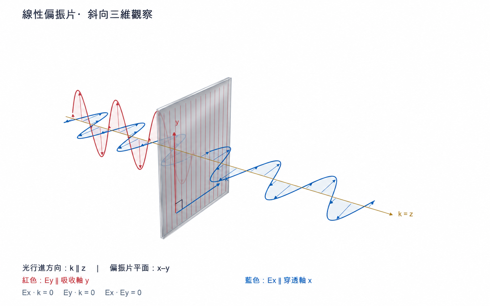
Fig. 12 的角度曲線，說明轉動偏振片時為何會出現亮、暗方向。
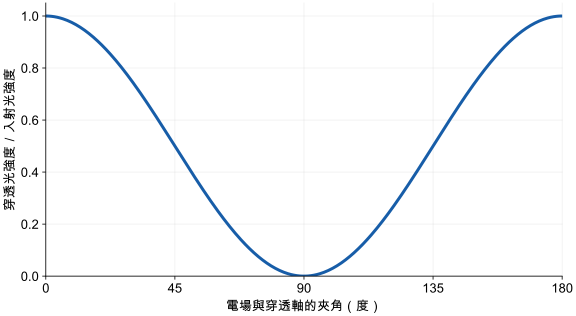
理想線性偏振片讓非偏振入射光的一半強度通過。若入射光為線偏振，兩軸平行時最亮，垂直時最暗。實際偏振片仍有吸收與有限消光比。攝影用 CPL 還包含相位延遲層；S012Cam 應使用指定的線性偏振片。
左邊是直接看螢幕，亮度不變。右邊是在同樣的白色 LCD 前放一片偏振片。轉動時，只有透過偏振片看到的範圍會改變；穿透軸與 LCD 的固定電場軸垂直時，這個範圍變暗。
通過偏振片的光強度，相對最亮時： · 理想線偏振 LCD 模型（I/Imax = cos²α）。轉動的邊框代表實際偏振片，金色標記是它的穿透軸；真實偏振片不會完全消光。
將兩片線性偏振片放在漫射光源前，轉動其中一片 180°，觀察亮、暗、再亮。兩片偏振片只能確認彼此的相對軸向，不能單靠它們確定哪個方向是絕對垂直。
延伸閱讀：Nitto Denko: Process for making a polarizing film, US6833090 · Nikon MicroscopyU: Introduction to Polarized Light
利用反光的已知偏振方向作基準。水平玻璃或水面在接近 Brewster 幾何條件時，反光主要為水平偏振。透過偏振片看到反光最暗時，偏振片的穿透軸約為垂直方向。
先依 Fig. 13(a) 的幾何觀察反光，再如 Fig. 13(b) 轉動偏振片，找到反光最暗的方向。
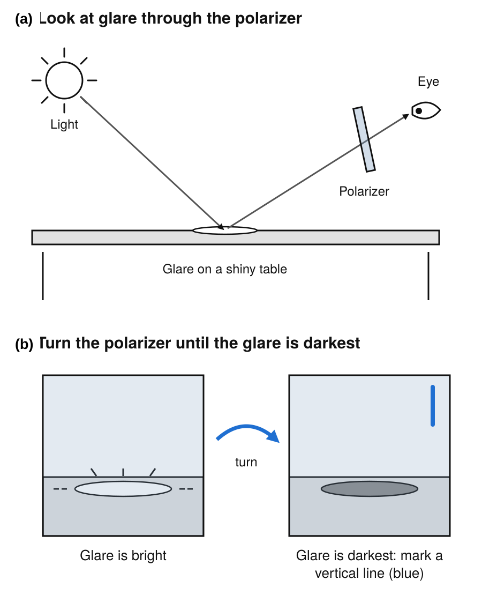
保持偏振片方向不變，再依 Fig. 14 標記穿透軸。
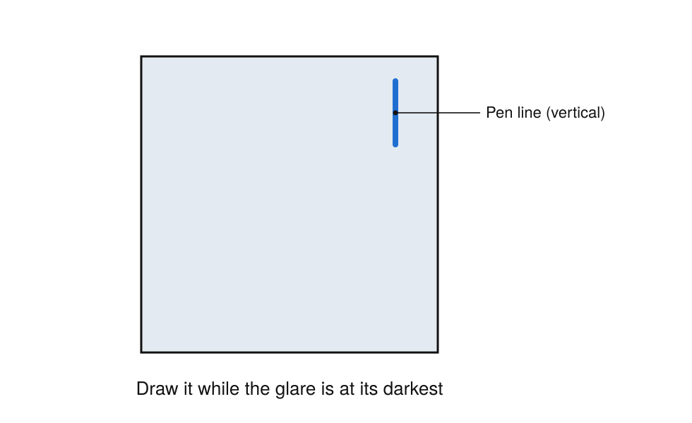
橫放並保持 iPhone 水平，量測同一片水平反光。主要電場方向應相對手機為水平。若顯示垂直，先檢查偏振片是否裝錯 90°，以及軸向基準。這是實用的方向檢查，並不等於完整的量測系統校正。
日光被空氣分子散射後，天空會出現具有空間分布的偏振圖樣。晴朗時，離太陽約 90° 的天空通常有較強線偏振。這是與太陽的夾角，不是固定的仰角。簡單的單次散射模型中，電場垂直於太陽、散射分子與觀察者所形成的平面。
Fig. 15 的直角幾何幫助找出離太陽約 90° 的天空；可對照 Fig. 7 的完整穹頂。
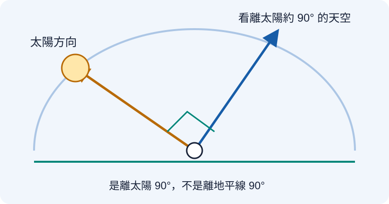
雲、霧霾、氣膠、多重散射與地面反射，會改變理想圖樣，並常使 DoLP 降低。廣角畫面內不同方向的天空，在旋轉偏振片時可能呈現不均勻的明暗。
鏡頭避開太陽。在晴天選三個與太陽夾角不同的天空區域，包含約 90° 的位置。以相同設定比較 R、G、B 的 DoLP 圖，並記錄雲與霧霾狀況；不要期待真實天空一定得到理想值 1。
延伸閱讀：Cronin & Marshall: Patterns and properties of polarized light in air and water · NASA Goddard: Rayleigh Scattering
典型 LCD 由背光、偏振片及可用電場控制的液晶層構成。液晶改變光的偏振變換，再由分析片把偏振變化轉成明暗。因此，許多 LCD 射出的光具有很強的線偏振。軸向會因面板、擺放方向、波長與觀察角度而不同。
比較常白型 TN 範例：Fig. 16(a) 未加電壓而呈亮，Fig. 16(b) 加電壓而呈暗。液晶分子方向與光的電場，是不同的物理量。
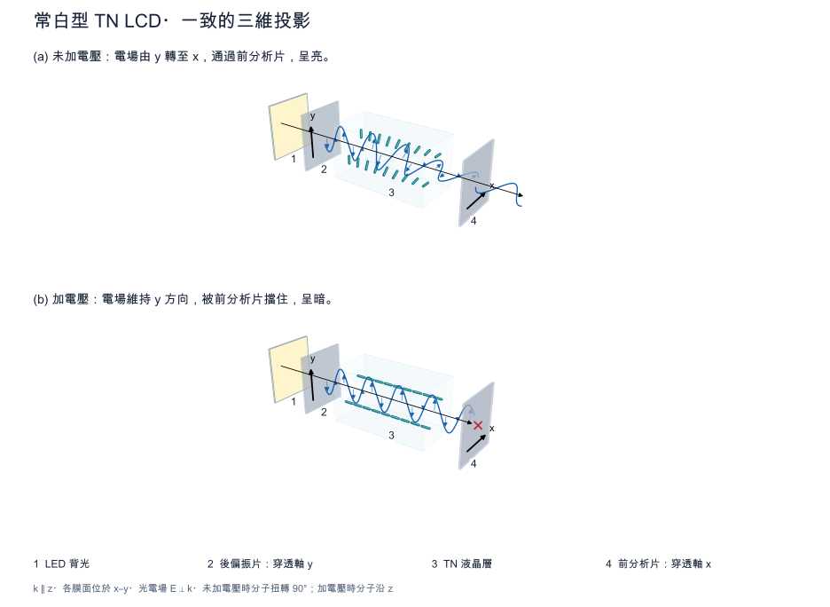
Fig. 17 的選點量測，顯示這片 LCD 發出的光具有很強的線偏振。

LCD 上顯示的藍天照片，不等於藍天本身的偏振量測。發出光線的偏振由螢幕光學結構決定。其他顯示技術、保護層與補償膜，也可能產生不同甚至橢圓的偏振狀態；不要假設每個螢幕都是理想線偏振光源。
讓 LCD 顯示均勻白色畫面。用一隻眼睛透過線性偏振片看螢幕，保持視線方向不變，轉動偏振片，找最亮與最暗方向，再依序顯示紅、綠、藍色畫面重做。記錄實際觀察，不要預設所有螢幕都有相同軸向。
Fig. 18 的彩色圖樣，展示交叉偏振片之間的應力雙折射。
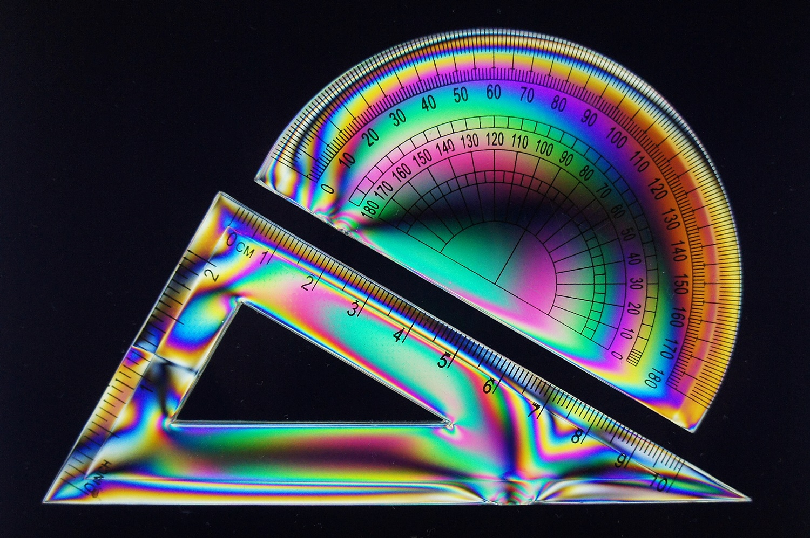
將透明塑膠湯匙或尺，放在 LCD 與可旋轉的分析偏振片之間。應力雙折射讓不同偏振分量產生不同相位延遲，其波長依賴性可形成彩色圖樣。轉動物件，或輕微彎曲合適的塑膠試片。若沒有校正材料模型，不能把顏色直接當作應力刻度。
延伸閱讀：Renesas: Liquid Crystal Displays—Theory of Operation and Application · Leica Microsystems: A Guide to Polarized Light Microscopy
偏振可以抑制不需要的光、編碼影像、顯示材料結構，或為量測增加資訊。以下應用所需儀器不同；S012Cam 用於線偏振影像觀察，並不取代所有列出的專用儀器。
應用
以大致垂直的穿透軸，抑制路面與水面的水平偏振眩光。
原理與例子應用
轉動分析片，減弱介電質反光，看清玻璃後或水面下的物件。
原理與例子應用
光源與鏡頭使用交叉偏振，減少鏡面反光，顯示印刷細節或表面缺陷。
原理與例子應用
透明塑膠或玻璃的應力雙折射改變相位，偏振片讓相關圖樣顯現。
原理與例子應用
電壓改變液晶對偏振的作用，再由分析片轉換成像素亮度。
原理與例子應用
左右眼影像使用不同偏振通道，眼鏡把各自的影像送到對應眼睛。
原理與例子應用
交叉偏振片可顯示許多各向異性晶體的雙折射及光學方向。
原理與例子應用
量測 s／p 的相對振幅與相位變化，再用模型推估薄膜厚度與光學常數。
原理與例子應用
利用偏振器與非互易的 Faraday 旋轉器，抑制回傳光對雷射的影響。
原理與例子應用
偏振分光器分開正交偏振；改變入射偏振，便能調整不同出口的光功率。
原理與例子應用
多角度、多波長偏振量測有助於判定氣膠及雲粒子的性質，NASA PACE 即採用此類觀測。
原理與例子應用
天空偏振圖樣帶有方向資訊，許多動物會利用它，光學導航系統也能採用這項資訊。
原理與例子旋轉線性分析片，在四個軸向取樣光強度。對理想、穩定且強度響應線性的資料，四張照片可估計 S₀、S₁、S₂。顯示影像的色相編碼 AoLP，並非原始光譜顏色；當 DoLP 接近零時，偏振角也不容易確定。
用 Fig. 19 的色盤，解讀 S012Cam 結果中編碼的 AoLP 與 DoLP。

理想上，兩組正交角度的強度和都等於 S₀。前提包括分析片角度正確、光源穩定、資料未飽和且與強度線性對應，以及四張影像對應到同一場景位置。雜訊、過弱通道及移動可能造成偏差。四張線性分析片影像不能求出 S₃。
示意圖為本頁原創教學圖。曲線依標示的理想物理模型計算，並非實測。照片來自專案素材與已標示來源、作者及權利資訊的典藏或授權圖片。立體材質圖為教學繪製，不是實物微觀照片。以下來源供核對原理與應用範例。